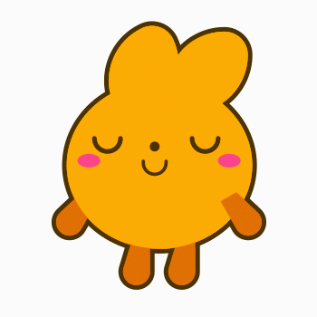
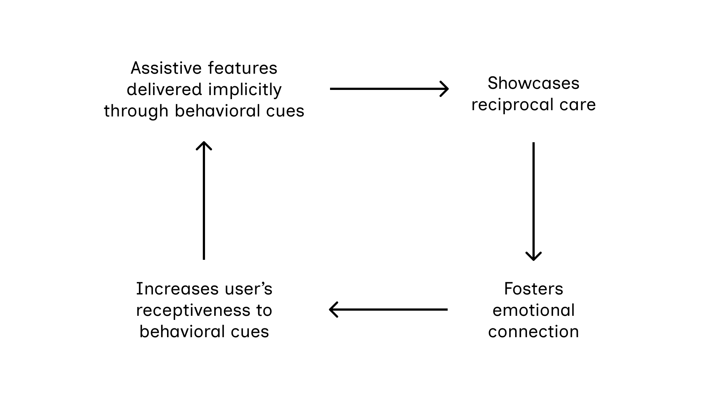
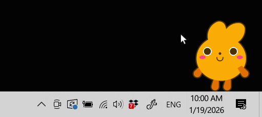
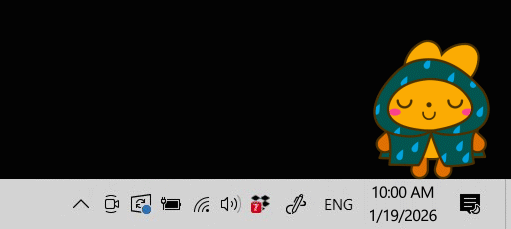
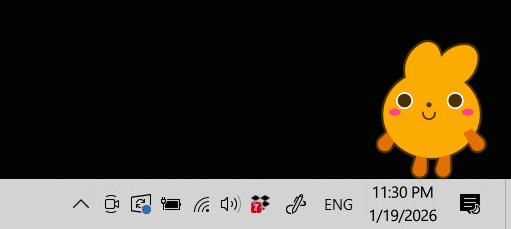
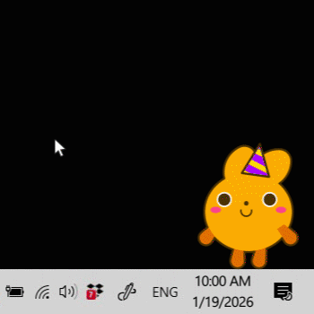
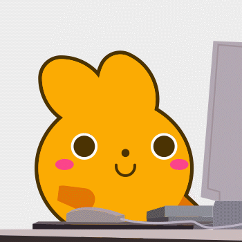

About
It supports daily routines by using implicit behavioral cues rather than explicit notifications.

MiniKin's Purpose
As a research artifact of my thesis, MiniKin's purpose is to highlight the untapped potential of virtual pets as the face of implicit interaction, pointing towards a new paradigm of UI design.Concept
An Issue in Current Virtual Pets
Unlike real-life pets, current virtual pets encounter the issue of having a one-sided care dynamic with their users, where they do not reciprocate the care users provide to them.This may be why virtual pets are unable to sustain long-term user engagement.
A Potential Solution
The following diagram proposes how virtual pets, when equipped with assistive features that support users’ daily routines to showcase reciprocity, establishes emotional connection with their users, who in turn become more receptive of this care.
As this cyclical relationship continues, the strengthening emotional connection further enhances the effective of implicit interactions, thereby sustaining long-term engagement that may surpass that of conventional interfaces.
MiniKin's Role
MiniKin explores this cyclical relationship by revising this one-sided dynamic into a reciprocal one by implicitly showing care through assisting users in their day-to-day lives.In doing so, MiniKin forms an emotional connection with users, thereby sustaining engagement with its them.
He's waiting by the bottom-right corner of your screen.
You can do so by holding down the right-mouse button and dragging it.

Features
MiniKin would be happy to tell you more about them! Just click on him and ask away.
MiniKin's features are based on real time. Shown below are snippets of how MiniKin will behave at certain times of the day.
Weather Updates
Through outfits, MiniKin informs user of the weatherFor example, it wears a raincoat when it is raining.

Event Notifications
On special events, MiniKin will wear an accessory related to the event.For example, if it is someone’s birthday, MiniKin will wear a party hat.
Wellness Checks
MiniKin drinks water every 15-minute mark on your computer's clock...Bedtime Reminders
MiniKin dozes off at 11.30pm and sleeps until 7:00am.It is a quiet indication for the user to go to bed and get sufficient rest.

Evaluation
I conducted individual design research interviews with 6 participants to assess their reaction to MiniKin and whether their interpretations of its behavior align with the intended feature.During the interview, participants observe MiniKin while I asked them questions on what they can infer from MiniKin's behavioral cues.

Key Insights
Implicit Interaction
While the majority identified MiniKin's behavioral cues, there was a level of confusion pertaining to what it means.For example, all participants noticed MiniKin hydrating, but 66.7% inferred it as a hydration reminder. These participants hydrate on a time-based regime, which is what MiniKin's reminder operates on. Participants who did not recognize the reminder hydrated based on task-completion, meaning they hydrate only after finishing a task.
This suggests that if a virtual pet’s behavioral cue is associated with a habit that is absent from the user’s routine or performed in a way that differs from their usual pattern. The user would not be able to interpret it accurately.
Emotional Connection
All participants reacted positively to MiniKin, displaying a level of fondness for MiniKin, referred to MiniKin as “he” instead of “it”. One participant empathized with MiniKin, saying he looked “uncomfortable” sleeping with his raincoat on, even when there was no change in his expression. Another participant saw petting MiniKin as a way to feel “more connected” to him.
These findings indicate that participants perceived MiniKin as a companion rather than an interface, suggesting an emotional connection has been established. This highlights the potential that emotional connection may increase users’ receptiveness to a virtual pet’s behavioral cues enabling them to carry out their assistive features more effectively.
Conclusion
Based on the insights, This suggests that the proposed cyclical relationship between emotional connection and implicit interaction may hold, potentially enabling virtual pets to distinguish themselves from real-life pets and to sustain longer-term engagement than conventional interfaces.